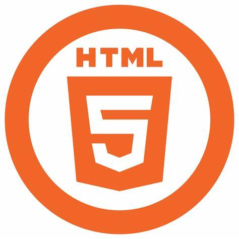
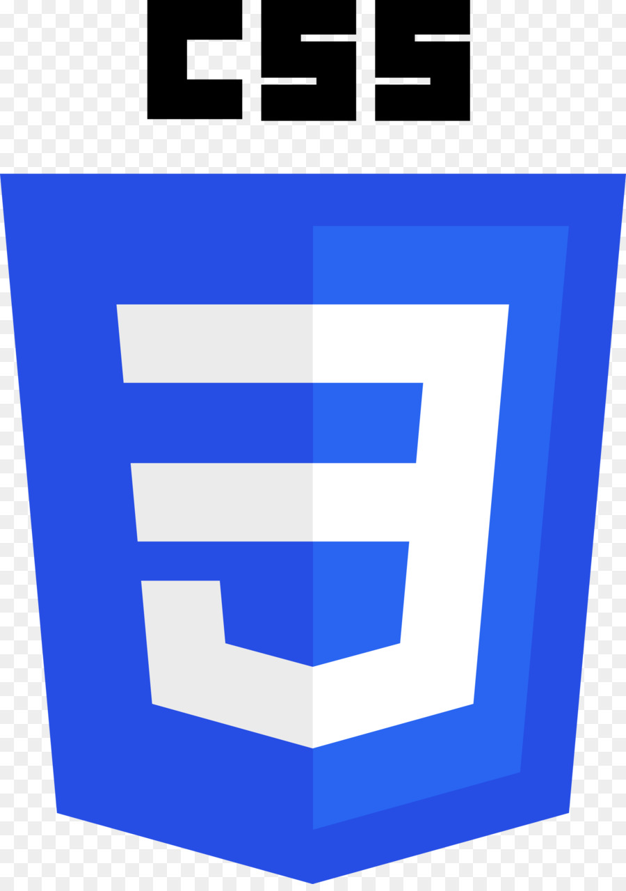

| JAVA | Java est une technique informatique développée initialement par Sun Microsystems puis acquise par Oracle à la suite du rachat de l'entreprise. Défini à l'origine comme un langage de programmation, . |  |
| Html | BHTML est un langage décrivant la structure et le contenu sémantique d'un document web. Il est constitué d'éléments, chacun pouvant être paramétré grâce à différents attributs |  |
| CSS | Les feuilles de style en cascade, généralement appelées CSS de l'anglais Cascading Style Sheets, forment un langage informatique qui décrit la présentation des documents HTML et XML |  |